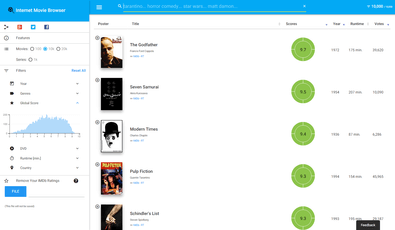
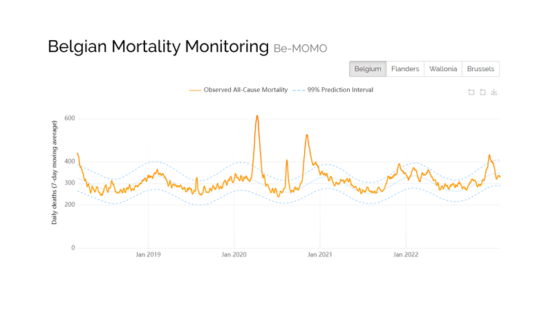
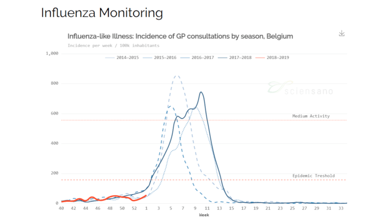

Epistat
Infectious Diseases Interactive Dashboard

Infectious Diseases Interactive Dashboard
Movie Database Exploration Tool
Client Group Project for the Information Visualization MOOC

Kriging on top of a zoomable & draggable map

Map with Search and Location Finder, loading data from online spreadsheet

Experimenting K-Nearest Neighbor Algorithm on Movie Ratings
Graphs for Belgian Mortality Monitoring
Dynamic exploration dashboard

Dynamic exploration dashboard

Weekly flu in Belgium
Have some questions? Some work to do? Feedback?
I will get back to you shortly.